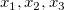

線形および多項回帰
Linear-Polynomial-Regression
概要
線形および多項回帰は、1つまたはそれ以上のデータセットのよくフィットする線を計算します。また、多重回帰はいくつかの予測変数と1つの反応変数間の関係を調べるものです。
パラメータは重み付けした最小二乗法を使って推定されます。重みはフィットの際に従属変数に与えられ、影響力の高いポイントの影響を減らすことができます。フィットの後、仮説検定と残差のプロットを使ってモデルが評価されます。
フィットの実行方法
フィットの操作
X/Yエラー付きデータで線形フィットを実行する
- エラーは独立、従属変数の両方で存在でき、従属変数Yのエラーは、入力データでYエラーとしてYエラー列を設定し、フィット制御でエラーを重みとすると、全てのフィットツールで扱えます。
- しかし、独立変数Xのエラーを扱うには、Xエラー付き線形フィットツールを使用する必要があります。これは、入力データで、XとYエラーの両方を設定でき、重みとすることができます。詳細は、このページをご覧ください。
パラメータを固定して線形/多項式フィットを実行する
- 上述のツールではフィットパラメータを固定することができます。例えば、ダイアログのフィット制御で切片固定にチェックを付け、値として0を入力すると、 (0,0)を通るフィット線になります。パラメータ固定により、モデル自由度が減少します。
現在のグラフ軸の設定で線形/多項式フィットを実行する
- グラフ上で線形/多項式フィットを実行し、フィット制御で、図上値によるフィットを使用して、現在の軸の設定を参照することができます。
- 図上値によるフィットを選択すると、フィットダイアログはまずグラフ軸タイプで指定したように入力データを新しいデータ空間に変換し、それから新しいデータで曲線をフィットします。
- 図上値によるフィットでlog-logグラフの傾きを検索するサンプルがあります。
フィット曲線グラフのXデータタイプを定義する
- X 軸スケール、フィット曲線の範囲を定義が可能です：フィット曲線のプロット：
アドバイスとヒント
特定の点を通る曲線フィット
- 線形および多項式回帰では、特定の点を通るフィット曲線を得るための2つの方法があります。
-
- (0,0)を通るフィット曲線にするには、線形/多項式モデルの切片を0に設定します。
- 元データの特定の点を通るようなフィット曲線にするには、そのポイントに大きな重みを設定します。
- 詳細な情報は、このページを確認してください。
複数線形回帰を境界や制約付きで実行する
- 複数の線形回帰関数を定義して、非線形曲線フィットツールで制約を設定することができます。
- 詳細は、このページを参照して下さい。
フィット処理で外れ値を識別する
- フィット曲線を取得すると、いくつかのポイントとモデルによるフィット曲線間で大きな差がある場合、それらの点を外れ値として識別する必要があります。
- 線形フィットでは、線形フィットダイアログボックスで外れ値のチェックボックスをチェックして、結果表に外れ値を表示できます。あるいは、こちらで紹介しているように、Q-Qプロットを使用して外れ値を識別できます。また、分析処理から外れ値を除外することができます。
YからXまたはXからYを検索する
- X/Yの検索表は、フィットを実行した後のフィット曲線で、指定した独立変数の値から従属変数の値または、指定した従属変数の値から独立変数の値を取得できます。
以下もご覧下さい。
結果の解釈
回帰結果の解釈のページで、以下の情報を確認できます。
アルゴリズム
アルゴリズム（線形回帰）
アルゴリズム（Xエラーあり線形フィット）
アルゴリズム（線形多重回帰）
アルゴリズム（多項式回帰）
詳細：非線形モデルの線形フィット
数式に複数の線形パラメータ項が含まれていれば、数式の解析解を得ることができます。
例えば、多項式：
または、より一般的な式
非線形曲線フィットを使って、反復解を得るのではなく、異なる独立変数(  など)として線形項を取り扱い、線形多重回帰や多項式フィットを使って複数の線形項の回帰を実行し解析解を得ることができます。相互関数を線形パラメータの式に変換する方法の事例があります。
しかし、2つのモデルのポイントにおける残差平方和（RSS）への異なる寄与が理由で、直接非線形居幾銭フィットをした場合と線形の方法で変換したフィットではパラメータの推定結果が異なります。詳細はこのページを確認してください。